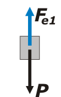
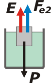

NO ME SALEN
EJERCICIOS RESUELTOS DE FÍSICA DEL CBC
FLUIDOS - PRINCIPIO DE ARQUÍMEDES |
|

|
| |
NMS 34*) Un bloque cúbico, macizo y homogéneo de 10 cm de arista es colgado del techo mediante un resorte ideal de 25 cm de longitud natural, de manera tal, que en el equilibrio la longitud del resorte es de 45 cm. Se sumerge al cubo en un recipiente con agua, y al alcanzar nuevamente el equilibrio, el 75% de su volumen queda dentro de dicho liquido. Si la longitud del resorte en estas condiciones es 35 cm. Calcule la densidad del bloque
|
| * Este ejercicio formó parte del 2do. examen parcial de mi materia tomado el 16 de noviembre de 2018 en Ciudad Universitaria. |
|
|
Bueno, bueno... no te abatates ni te abatatos ni te abatatas. Es sencillito pero hay que ser muy prolijo. Como siempre vamos a reemplazar los datos numéricos en la última instancia, nunca antes.
Además tenés que tener en claro que las fuerzas que hacen los elásticos equivalen al producto entre la constante elástica, k, y la deformación, Δx. De modo que cuando sostiene al cuerpo en el aires hará una fuerza que llamaremos Fe1 y cuando sostiene al cuerpo semisumergido hará una fuerza menos que llamaremos Fe2.
Fe1 = k . Δx1
Fe2 = k . Δx2
Donde los estiramientos valdrán:
Δx1 = 0,2 m
Δx2 = 0,1 m
Ya que las deformaciones se calculan fácilmente restando la longitud del resorte estando deformado menos la longitud del resorte sin deformar (la longitud natural). Todas estas cuestiones nada tienen que ver con la hidrostática pero si no las tenés claras, la resolución fracasa. Ahora sí, vamos a la hidrostática empezando, como siempre, por Newton. |
|
|
|  |
|
Acá está el cuerpo colgando del techo y en el aire. Esta situación la llamaré 1. Las dos únicas fuerzas que actúan sobre él son la fuerza elástica inicial, Fe1, y el peso, P. Como el cuerpo está en equilibrio, podemos asegurar que:
P = Fe1 (Newton)
|
| Ahora viene la situación 2, en la que ese mismo cuerpo se sumerge en agua y deja una porción al aire y otra sumergida. |
|  |
|
Ahora las fuerzas que actúan son tres: la nueva tensión que hace el hilo, el peso del cuerpo (¡que no cambia!) y el empuje que recibe del agua tal como predijo Arquímedes.
P = Fe2 + E (Newton)
El peso del cuerpo no cambia (ese es un negocio entre el planeta Tierra y el cuerpo, en nada le afecta estar sumergido del todo o poquito o nada). |
|
|
|
El peso específico, γ, es el cociente entre el peso y el volumen. Además es el producto entre la densidad y la gravedad: γ = ρ . g . Entonces el peso es igual al producto entre el peso específico y el volumen. Podemos expresarlo así:
P = ρcpo . g . V (def. de peso específico)
Y el empuje, según el principio de arquímedes, es igual al peso del líquido desalojado. Según el enunciado el cuerpo semisumergido desaloja un volumen de agua igual al 75% de su propio volumen, de modo que:
E = ρH20 . g . 0,75 . V (Arquímedes)
Reescribamos las ecuaciones de Newton reemplazando lo que sabemos de las fuerzas elásticas, el peso y el empuje:
ρcpo . g . V = k . Δx1
ρcpo . g . V = k . Δx2 + ρH20 . g . 0,75 V
Y ahora supongo que ya te diste cuenta de que el ejercicio quedó cocinado, porque tenés dos ecuaciones y dos incógnitas: la constante elástica y la densidad de cuerpo, k y ρcpo. La densidad del agua es un dato conocido aunque el enunciado no te lo diga,
ρH20 = 1.000 kg/m3
Bueno, vamos al álgebra, yo te lo hago para que no llores. De la primera ecuación despejamos la constante elástica:
k = ρcpo . g . V / Δx1
Y eso lo metemos en la segunda:
ρcpo . g . V = ρcpo . g . V . (Δx2 / Δx1) + ρH20 . g . 0,75 V
Paso el primer término del segundo miembro al primer miembro:
ρcpo . g . V — ρcpo . g . V . (Δx2 / Δx1) = ρH20 . g . 0,75 V
El cociente Δx2 / Δx1 vale 0,5, dejame que lo reemplace ahora para mayor claridad. Además la gravedad y el volumen del cuerpo aparecen en todos los términos de modo que los puedo suprimir.
ρcpo — ρcpo . 0,5 = ρH20 . 0,75
ρcpo . ( 1 — 0,5) = ρH20 . 0,75
ρcpo = ρH20 . 0,75 / 0,5
ρcpo = ρH20 . 1,5
ρcpo = 1.000 kg/m3 . 1,5
|
|
|
|
|
|
| |
|
 |
No sólo me contuve de decir cuánto valía el peso del cuerpo, también evité calcular el volumen. ¿Hago bien o hago mal? ¿Qué te parece, y por qué?
DESAFÍO: ¿Qué ocurriría si el cuerpo tuviese una arista de 0,58 m? |
|
| |
 |
|
| Algunos derechos reservados.
Se permite su reproducción citando la fuente legítima, o sea, este sitio. Última actualización
dic-18. Buenos Aires, Argentina. |
|
|
| | |
|
|